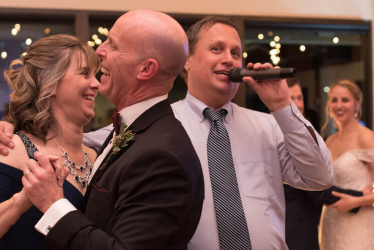

Finding the right Columbus wedding DJ takes more than a Google search and a star rating — especially when every DJ seems to have glowing reviews.
You want a DJ who makes cocktail hour feel effortless, dinner feel fun, and the dance floor impossible to leave. Reviews should help you find that person. But in Columbus's wedding market, a high star rating and a pile of five-star reviews can be genuinely misleading if you don't know what you're actually looking at.
This guide explains what Columbus wedding DJ reviews really tell you — and what they don't.
Why Wedding DJ Reviews Don't Always Tell The Whole Story
Online reviews for wedding vendors are typically written in the weeks following the wedding, often after the honeymoon haze has worn off. By that point, couples are reliving the highlights — not scrutinizing the details.
Very few brides write detailed critical reviews. Most people either rave or say nothing. That means the review record for almost every Columbus wedding DJ skews positive by default — regardless of actual performance.
"A 4.9-star rating tells you almost nothing. The reviews worth trusting describe specific moments — the song that packed the dance floor, the playlist that felt like it was built just for them, the DJ who kept the energy going all night long."
The Review Volume Trap: More Reviews ≠ Better DJ
A multi-DJ company in Columbus might have 150+ Google reviews. A solo DJ might have 40. At a glance, the company looks more established and trusted.
But here's what that math actually represents: the company's 150 reviews were generated by six or eight different DJs performing at six or eight different quality levels. You have no way of knowing which DJ you'll get on your wedding day — or whether the one who earned those glowing reviews is even still with the company.
The solo DJ's 40 reviews? Every single one is about the same person you're booking. The review record is a direct, unbroken track record for the exact DJ who will show up at your venue.
40 consistent reviews for one person beats 150 mixed reviews for an unknown.When you're evaluating Columbus wedding DJ reviews, always confirm: are these reviews about the specific DJ you're booking, or about the company in general?
What The Best Columbus Wedding DJs Actually Deliver
Reviews tell you what happened. But before you start reading them, it helps to know what you're actually evaluating. Columbus couples consistently prioritize five things when hiring a wedding DJ — and the best reviews reflect all of them.
-
Guest Experience — Keeping 80 people of different ages, tastes, and energy levels on the same dance floor. That's the real job — and the first thing any great DJ gets right.
-
Personalization — A DJ who builds your playlist around your taste and your crowd, not a template they use for every Saturday in May.
-
Crowd-Reading Ability — The instinct to feel when energy is peaking or fading and adjust in real time. No two Columbus receptions are the same.
-
Seamless Flow — Smooth transitions from ceremony to cocktail hour to dinner to dancing, without awkward gaps or jarring volume changes.
-
The Person You Booked Actually Shows Up — Not a substitute you've never met, assigned the week of your wedding from a company roster.
A DJ who delivers all five consistently will have reviews that reflect it — specific, enthusiastic, and written by couples who felt genuinely taken care of. That's exactly what to look for in any Columbus wedding DJ review.
Our Columbus Wedding DJ Recommendation
After looking at the Columbus wedding DJ market through the lens of this guide — review authenticity, consistency, solo vs. company, venue experience, and transparent pricing — one name stands out.
Editorial Recommendation
★ ★ ★ ★ ★DJ Rod & Buckeye Sounds Entertainment
DJ Rod checks every box this guide covers — and then some.- One DJ. One reception per night. You get DJ Rod.
- Every Google review is about the same DJ you're booking.
- Upfront pricing — no "contact us" required to see what it costs.

See Pricing & Check Availability Instant pricing — no form submission requiredOne DJ. Years of Columbus weddings. Every review points to the same person you're booking. That's the track record worth trusting.
How To Read Columbus Wedding DJ Reviews Like An Expert
Six things worth looking for in any review:
Did the reviewer describe an actual moment — a first dance, a crowd reaction, a song choice? Specificity signals truth.
Did reviewers mention a packed dance floor, guests who wouldn't leave, or energy that lasted all night? That's the review that matters most.
Did the DJ feel like a personality fit? Reviews that mention "they got us" or "knew exactly what we wanted" signal a truly personalized experience.
Did the DJ stay in touch, respond quickly, and actually listen? Reviews that mention pre-wedding planning are gold.
The most telling sentence in any wedding review: "I would hire them again in a heartbeat." Look for that phrase or its equivalent.
Wedding DJ businesses evolve. A wall of reviews from 2019 tells you less than a steady stream from the last 12–18 months.
Red Flags In Columbus Wedding DJ Reviews
These patterns in a DJ's review history are worth pausing on:
-
✗
Generic Five-Star Reviews With No Detail "Great DJ! Would recommend!" — ten of these in a row suggests a review-solicitation campaign, not ten genuinely happy couples.
-
✗
Review Spikes With Gaps Twenty reviews in one month, then nothing for six months. Can indicate aggressive review requests rather than consistent bookings.
-
✗
Reviewers Who've Never Reviewed Anyone Else A Google account with one single review — for this DJ — is worth less than a review from someone with a real review history.
-
✗
Praise That Could Apply to Anyone "Professional, on time, great music." This describes the minimum bar, not a standout performer. Reviews worth trusting are specific to this DJ's personality and style.
The Bottom Line On Columbus Wedding DJ Reviews
Reviews are a starting point, not a finish line. A high star rating in a competitive market tells you a vendor is competent and asks their clients to leave reviews. That's table stakes.
What actually predicts your experience is the specificity of the praise, the consistency of the reviewer, and whether you're booking a named individual or rolling the dice on whoever's available. Use this guide, ask the hard questions, and book someone whose track record you can actually trace.